SALUD · NOTA
7 cosas que nadie te explica sobre los hongos en las uñas
(y por qué tanta gente está terminando, por primera vez, un tratamiento de 3 meses con un aceite argentino)
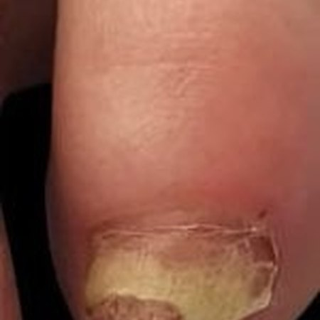
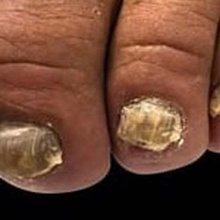
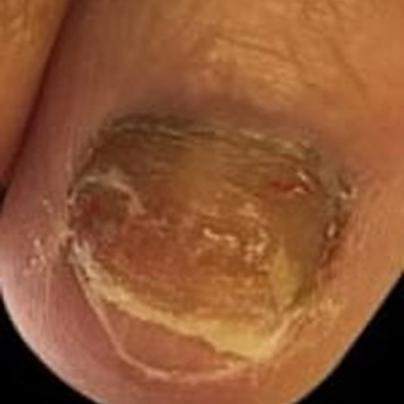
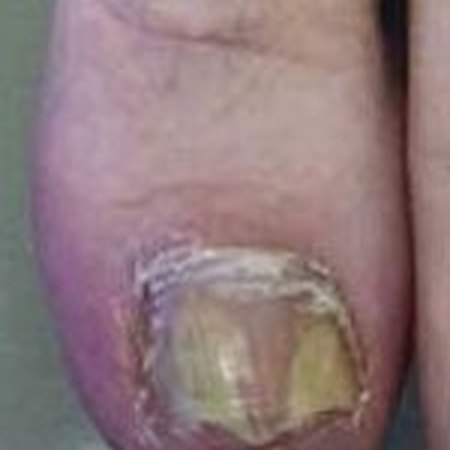
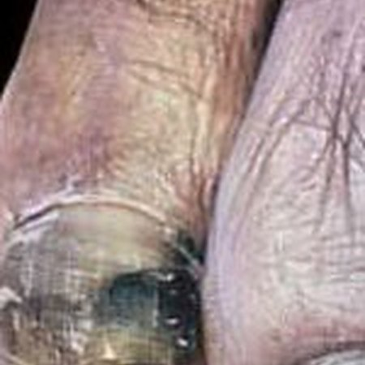
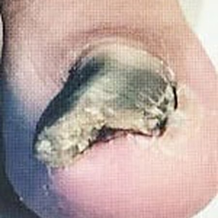
Si llevás tiempo con una uña amarilla, gruesa o quebradiza y ya probaste “de todo”, esta nota te va a ahorrar tiempo y plata. Explica qué es, por qué nada te duró, y qué están haciendo distinto las personas a las que sí les funcionó.
01La escena
No es la uña. Es todo lo que dejaste de hacer por ella.
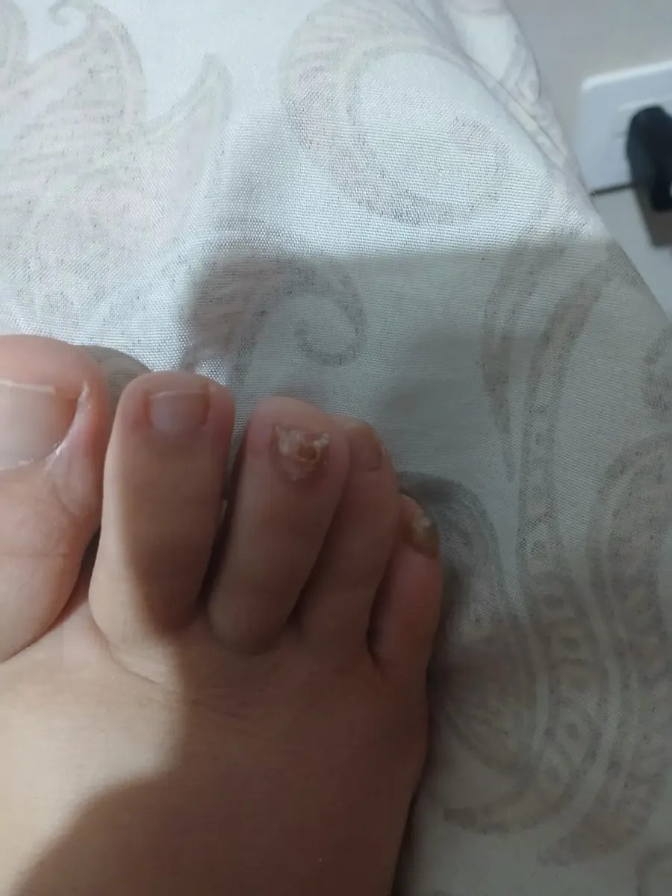
Empieza con una manchita amarilla en el dedo gordo. Al principio la tapás con esmalte. Después la uña se pone gruesa, el alicate ya no la corta bien y la limás a escondidas. Un día te das cuenta de que hace dos veranos que no usás ojotas, que en la pileta del club entrás con las zapatillas puestas hasta el borde, y que cuando te sacás las medias en lo de alguien lo hacés rápido y con el pie escondido debajo de la silla.
Eso no es “un problema estético”. Se llama onicomicosis: un hongo que se instala debajo de la uña y se alimenta de su queratina. Lo tiene alrededor de 1 de cada 10 adultos, más a partir de los 40, y no tiene nada que ver con la higiene: se contagia en vestuarios, piletas, pedicurías y zapatillas cerradas, y la humedad del calzado hace el resto.
02Lo que ya probaste
Vinagre, bicarbonato, la crema de la farmacia y el aceite “milagroso” de Mercado Libre
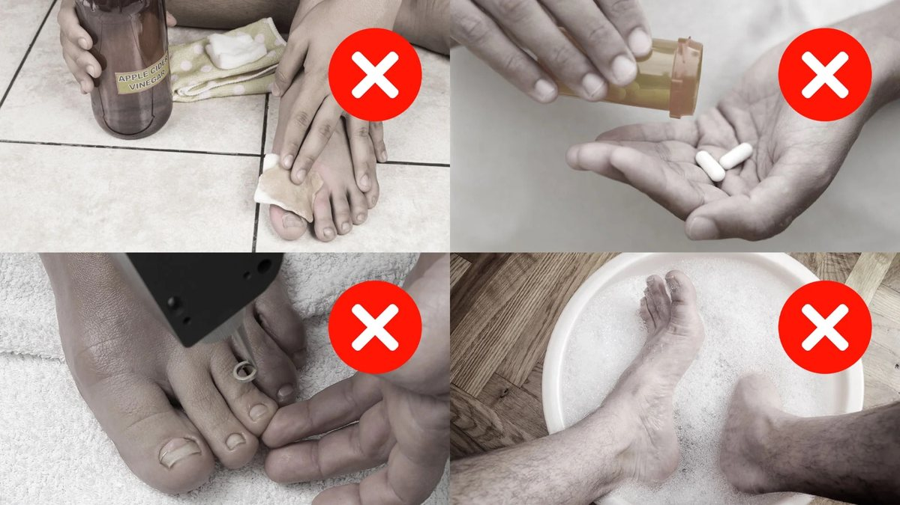
Si estás leyendo esto, seguro pasaste por alguna de estas: el algodón con vinagre de manzana todas las noches. El bicarbonato con limón. La crema antimicótica que te dieron en la farmacia “que también sirve para uñas”. El esmalte de 20 lucas que había que lijar antes de aplicar. El aceite sin marca que llegó en un frasquito de plástico. Y, si fuiste al médico, los comprimidos que no te quiso recetar sin un análisis de hígado antes.
Todos tienen el mismo problema, y no es que vos lo hiciste mal: actúan en la superficie. El hongo vive en el lecho subungueal, el tejido blando debajo de la uña, protegido por la lámina de queratina y por una coraza de proteínas y azúcares llamada biofilm. Lo que no atraviesa la uña, no llega. Y lo que llega pero se abandona en la semana 3, cuando la uña “se ve mejor”, deja un hongo debilitado que vuelve más resistente.
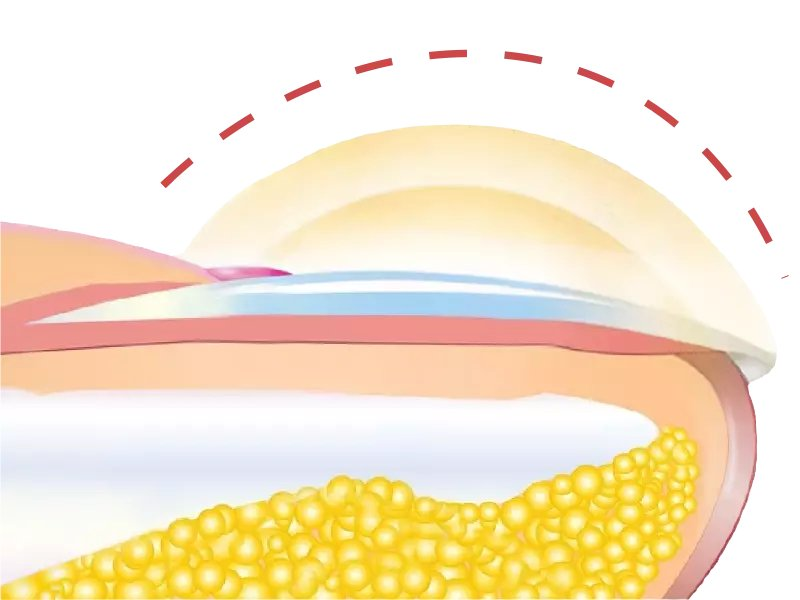
Un detalle que casi nadie te cuenta: la uña del pie crece apenas 1,5 mm por mes. Una uña dañada no “se cura”: se reemplaza por una nueva que crece desde la base. Cualquier cosa que prometa una uña limpia en dos semanas te está vendiendo humo, y cualquier cosa que no llegue abajo de la uña está perdiendo el tiempo.
03Lo que cambió
Dejar de comprar “un frasco” y empezar un ciclo
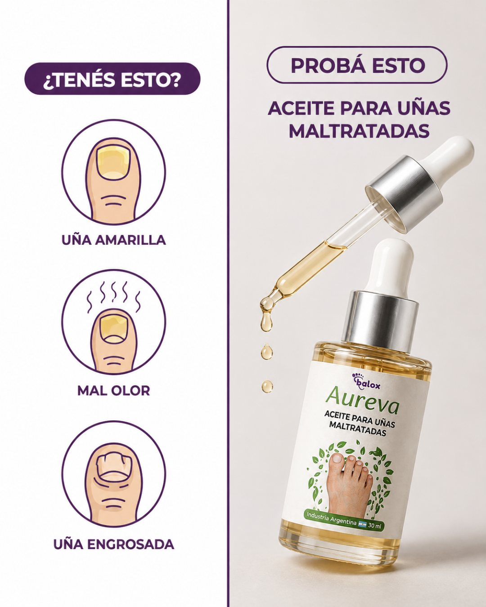
El punto de quiebre, para mucha gente, fue entender que el tratamiento no es un producto sino un ciclo de 12 semanas, y que lo que se aplica tiene que hacer tres cosas, en orden: atravesar la uña, desarmar el biofilm y acompañar a la uña nueva mientras crece.
Así está pensado Funguvex. En la etiqueta dice Aureva; lo fabrica un laboratorio argentino, tiene registro ANMAT y se vende como tratamiento de tres goteros, uno por mes, no como frasco suelto. El vehículo es aceite de ricino, que atraviesa la queratina y transporta los activos. Los activos son tea tree y orégano, los dos con más evidencia antifúngica publicada, y romero y aceites florales para la fase de renovación. Sin alcohol, sin parabenos, sin olor a farmacia.
★★★★★ +260 opiniones en Mercado Libre · 4,9/5 en la tienda oficial
04Cómo se usa
Dos gotas, dos veces por día, y una lima
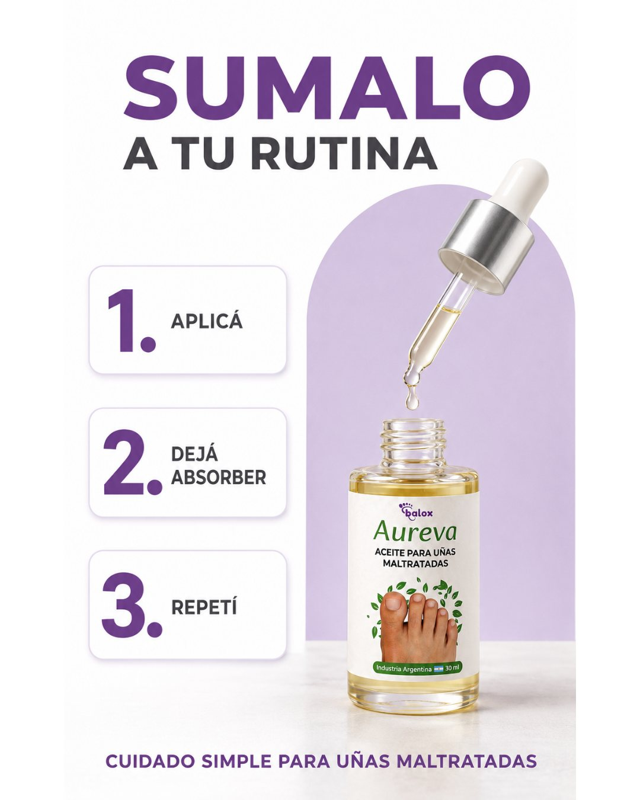
La rutina es más simple de lo que parece: pies limpios y secos, 2 o 3 gotas sobre la uña y la piel de alrededor, dejar absorber un par de minutos y calzarse. Mañana y noche. Una vez por semana, limar suavemente la superficie de la uña para que el aceite penetre mejor; en uñas muy gruesas es lo que más acelera todo.
Lo que la gente cuenta que nota primero no es la uña: es que la picazón y el olor se van en la primera o segunda semana. La uña tarda más, porque la uña no se cura: se reemplaza.
05Por qué tres meses
La uña del pie crece 1,5 mm por mes. Hacé la cuenta.
Para que una uña afectada se renueve completa, la uña nueva tiene que recorrer todo el camino desde la base hasta la punta. A 1,5 mm por mes son al menos 12 semanas. Por eso el tratamiento se vende por tres meses, y por eso cada mes tiene un trabajo distinto:
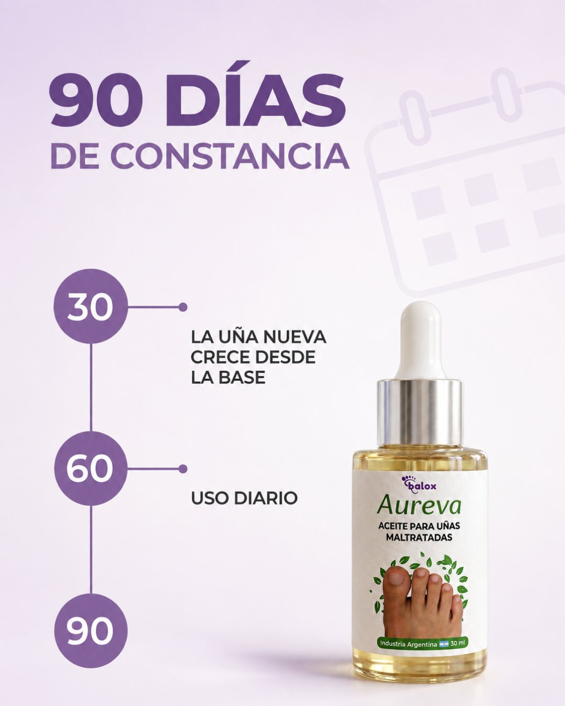
-
1
Mes 1 · Penetración
Aceite de ricino + tea tree
El ricino atraviesa la lámina ungueal y lleva los activos hasta el lecho subungueal, la capa blanda donde vive el hongo.
Qué notás: menos picazón y ardor en la primera semana; el olor característico empieza a irse.
-
2
Mes 2 · Ataque
Tea tree (terpinen-4-ol) + orégano (carvacrol)
Los dos activos trabajan sobre el hongo y sobre su biofilm, la coraza que hace que vuelva una y otra vez. La infección deja de expandirse.
Qué notás: la uña se aclara desde la raíz y empieza a asomar uña nueva. Es el momento en que la mayoría abandona.
-
3
Mes 3 · Renovación
Romero + aceites florales
Acompañan el crecimiento de la uña nueva y dejan una capa protectora para que el hongo no vuelva a instalarse.
Qué notás: uña renovada, sin manchas amarillas. Con uso preventivo una vez por semana, se mantiene.
06La diferencia
Qué lo diferencia de lo que ya tenés en el botiquín
Comparado con lo que probablemente ya compraste, en lo que importa de verdad:
| Funguvex (3 meses) | Cremas y esmaltes | Aceites genéricos | |
|---|---|---|---|
| Llega al lecho subungueal (debajo de la uña) | ✓ | ✗ | ✗ |
| Actúa sobre el biofilm del hongo | ✓ | ✗ | ✗ |
| Ciclo completo de 12 semanas, un gotero por mes | ✓ | ✗ | ✗ |
| Registro ANMAT | ✓ | ✓ | ~ |
| Industria argentina, fórmula natural (ricino, tea tree, orégano, romero) | ✓ | ✗ | ~ |
| Garantía de devolución del fabricante | 60 días | ✗ | ✗ |
| Costo del ciclo completo | $89.990 | se compra de a uno | “barato” hasta la cuarta compra |
Comparación basada en la información pública de productos tópicos de venta libre y de aceites genéricos sin marca. Los antimicóticos orales con receta son otra categoría: efectivos, pero con control médico y análisis de hígado.
07Lo que dice la evidencia (y lo que no)
Esto no es “medicina natural”. Es lo que se publicó sobre los activos.
No hace falta creerle al fabricante ni a esta nota. Esto es lo que está publicado sobre los dos activos principales:
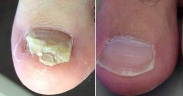
Tea tree vs. antimicótico de farmacia: en un ensayo aleatorizado y doble ciego con 117 pacientes con onicomicosis, el aceite de tea tree puro logró mejoría clínica parcial o total en alrededor del 60% de los casos a los 6 meses, el mismo resultado que el clotrimazol al 1%.
Buck DS, Nidorf DM, Addino JG. J Fam Pract, 1994Tea tree potencia otros antifúngicos: una crema con 5% de aceite de tea tree combinada con butenafina logró 80% de curación a las 16 semanas, contra 0% del placebo.
Syed TA et al. Trop Med Int Health, 1999Carvacrol (orégano): múltiples estudios de laboratorio muestran actividad antifúngica del carvacrol frente a dermatofitos como Trichophyton, el hongo más frecuente en las uñas de los pies.
Estudios in vitro publicados en revistas de micología
Lo que no dice ni el fabricante ni esta nota: Funguvex no es un medicamento. Es un producto cosmético de uso externo con registro ANMAT, formulado para mejorar la apariencia de uñas afectadas. Si tenés diabetes, problemas circulatorios, dolor intenso o supuración, consultá a un profesional antes de empezar.
Lo que cuentan los que lo están usando
Reseñas de compradores, tal cual las escribieron en Mercado Libre y en la tienda oficial de la marca.
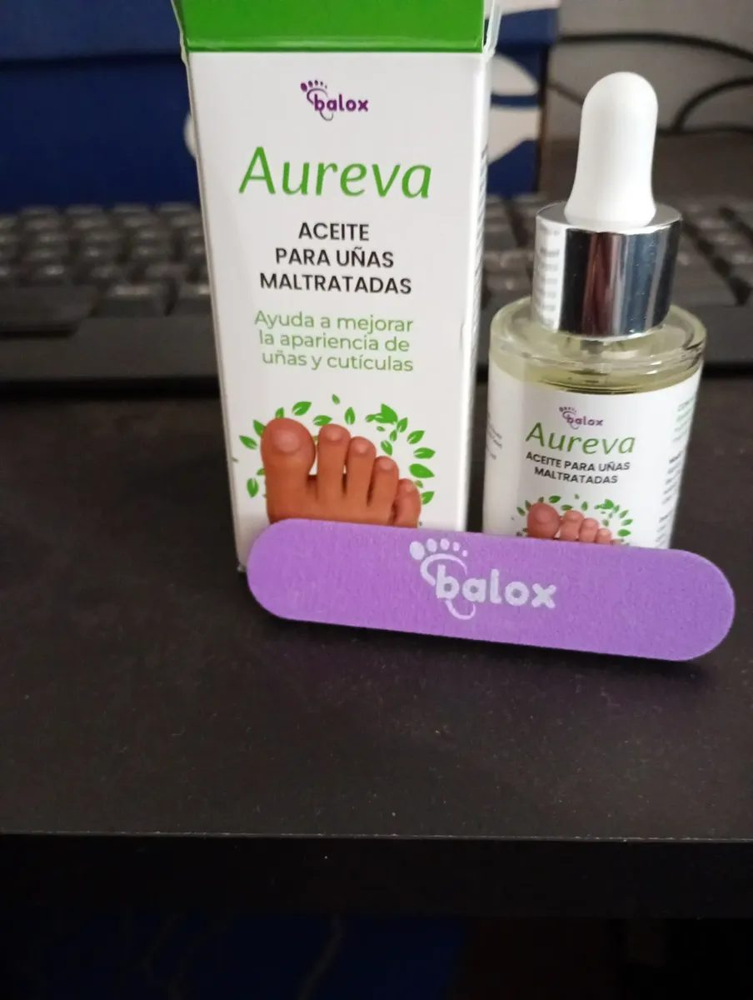
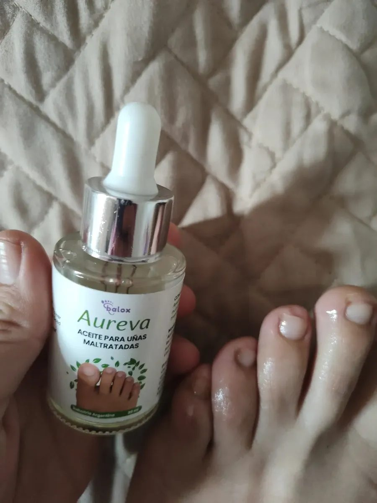
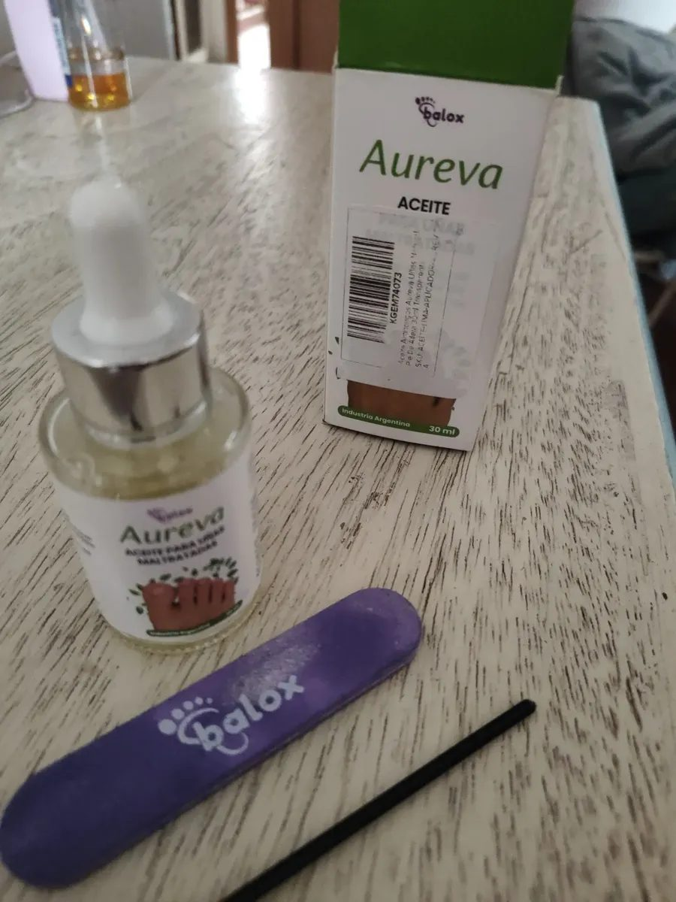
“Les comento sobre el aceite Aureva. Con paciencia y constancia les aseguro que se va el hongo de las uñas. Todos los días, cortando y limpiando la zona. Totalmente recomendable.”
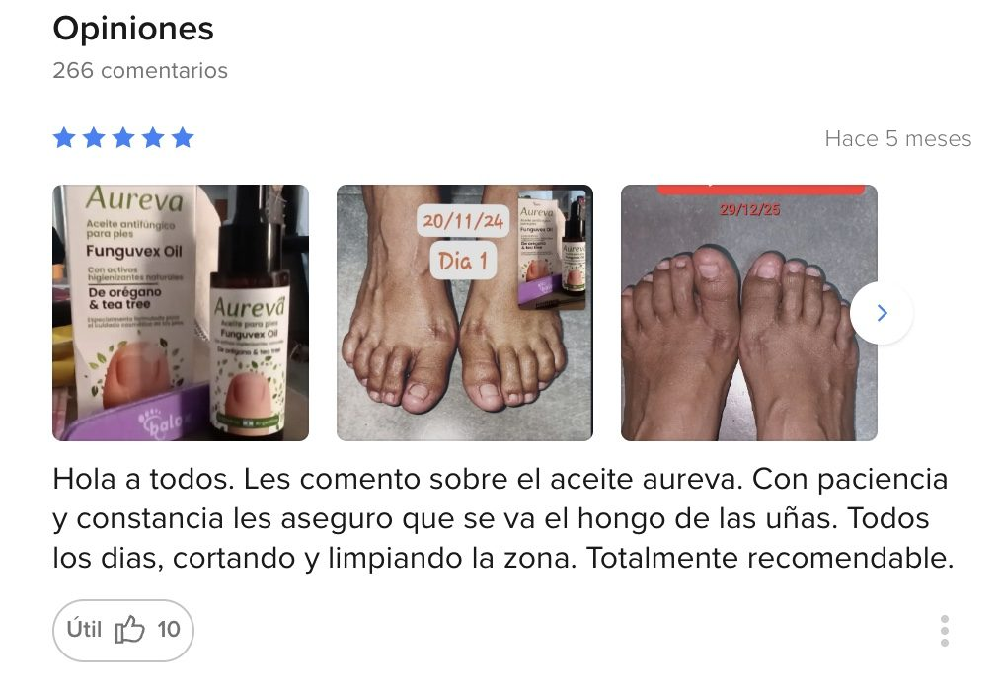
“De a poco se están limpiando esas uñitas, las cuales no lucía ni pintura ni sandalias. Estaba tan enojada porque no podía combatir esos hongos. Gracias por pensar en ese producto genial. Me volvió la confianza.”
“Hace poco que uso el aceite pero ya se está aclarando mi uña.”
“Muy buen producto, las uñas se ven mucho mejor.”
“Les dejo sí o sí esta reseña porque quedé chocha, quiero que miren el cambio. Agradecida totalmente, la entrega rápida y muy atentos.”
Se vende solo en la web del fabricante (y hoy está con descuento)
Al momento de publicar esta nota, el tratamiento completo de 3 goteros está con 45% de descuento y envío gratis. Es la misma oferta que ve cualquiera que entra al sitio, no un precio especial para lectores.
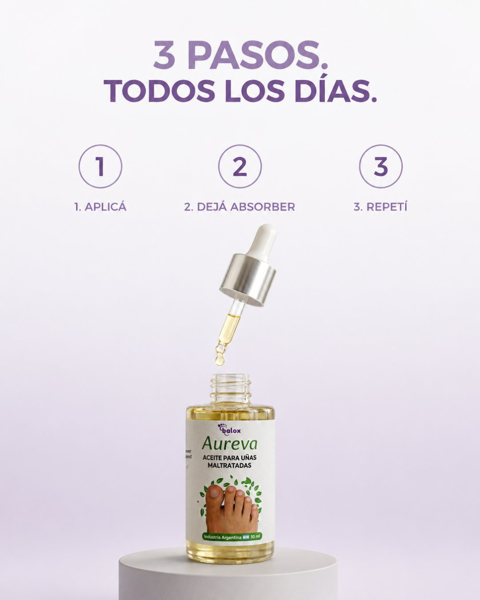
Tratamiento completo · 3 meses
3 goteros de Funguvex (Aureva) · 90 días
$212.070$89.990menos de $1.000 por día
- Envío gratis a todo el país
- Hasta 6 cuotas sin interés
- 15% extra pagando por transferencia bancaria
- Suscripción opcional: 15% OFF y regalos en cada envío
- Garantía de 60 días del fabricante: si no mejora, te devuelven el dinero
La oferta de hoy termina en --:--:--
Al entrar, elegí “Tratamiento Onicomicosis COMPLETO – 3 meses”. El 15% extra se aplica eligiendo transferencia al pagar.
¿Sirve para uñas muy gruesas, negras o con mal olor?
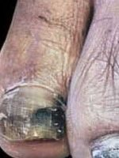
Sí; son los casos que más tiempo necesitan. Con uñas muy gruesas, recortá y limá la superficie una vez por semana para que el aceite penetre. El olor suele ser lo primero que se va.
¿Y si estoy con otro tratamiento?
Es de uso externo y puede complementar un tratamiento indicado por tu médico. Aplicalo siempre con la zona limpia y seca.
¿Sirve para las uñas de las manos?
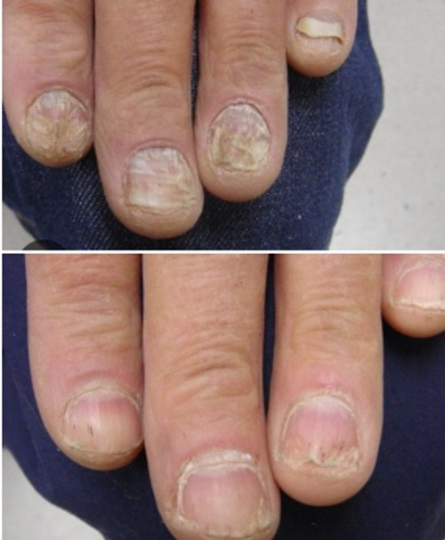
Sí. Es el mismo hongo y el mismo mecanismo. Las uñas de las manos crecen más rápido (unos 3 mm por mes), así que suelen renovarse antes.
¿Cuánto tarda en llegar?
Sale del depósito del fabricante en 24 horas hábiles. En CABA y GBA suele llegar entre 24 y 72 horas; al interior, según la zona. El tratamiento completo tiene envío gratis.
Garantía de 60 días · Envío gratis · Hasta 6 cuotas sin interés